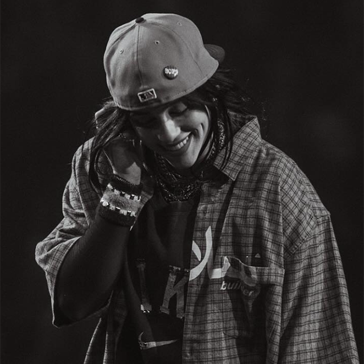

these are the people who inspire me
click each image for a surprise!
Harry Styles
Harry Styles promotes self-expression, kindness, and individuality through his music and unique sense of style
Billie Eilish
Billie Eilish is inspiring because she uses her bold and unique style and song lyrics to inspire her fans to be themselves.